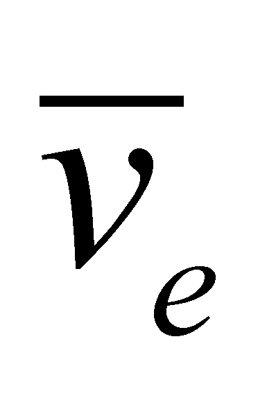

|
|
|
There are a lot of “energy forms” depicted in the nowadays scientific literature. We should discuss a little bit about the term of “energy form” because, at least apparently, there is a contradiction between this term and the assertion specific to this paper which states that all the known energy forms have a common component - that is the motion of MS. When we have presented the material fluxes, we saw that a flux like this implies an energy as an overall property of all MS involved in the motion process, that is a property evaluated by considering a reference system. This flux meant a spatial distribution of some MS which were moving in bulk with a common component of the velocity (if this component really exists), and with specific components of the velocity per each MS involved in this flux (evaluated against a common component as reference). The flux’s overall energy means the gathering of all the individual energies of the flux elements, otherwise speaking, each of these elements is an energy carrier (there is a distribution of the overall energy on the elements involved in flux).
Well, since these energy carriers can be all kind of MS (with various organization levels) the fluxes in which these objects are involved shall have different denominations. On the other hand, the fluxes may be also classified as propagation or displacement, coherent or stochastic, therefore, for each flux with different attributes, a specific energy “form” is associated, according to the current language.
The energy of a MS is a property of a complex object, which means that it is decomposable by means of distribution on the organization levels (in an analytical sense) of this object against a reference level45. Let us assume that there is a motionless MS against an outer reference, let us say SMk and that it has an analytical structure level n which means that it has other MS with organization levels n-p (p=1, 2, ...n-1)46 in its inner structure, which move against the inner reference of SMk, but their motion occurs inside RBS of MSk. These inner MS shall have an energy different from zero both against the inner reference and against the outer one (because the inner MS moves also against the outer reference, but their motion is imperceptible from the outside of MSk, or otherwise speaking, the coherent component common to all the internal fluxes is null against outer reference, but its specific components are non-zero). These inner fluxes which are closed in RBS of MSk, have associated energy values whose overall sum of all its elements provides the total internal energy of MSk, but this energy is not directly transmissible to other MS outside MSk.
Definition 7.6.2.1: The associated energy of the closed (stored) material fluxes inside RBS of a MS is the inner (internal) energy of that MS.
Comment 7.6.2.1: The inner translation, rotation, vibration, deformation motions etc. are inner motions of MS elements; therefore, these motion types would be related to inner energy forms of MS, specific components to the elements or to the group of elements found in the composition of that MS, non-transmissible (stored) energy, under the form of closed EF inside RBS of MS. The bonding energy (such as nuclear, ionic, covalent, Van der Waals-type etc.) may be also included in the same class of the inner energy variety, being stored into the interchange (interactive) fluxes deployed between the elements of a MS, as well as the rest energy or the thermal energy in case of the thermally insulated MS. All the inner energy versions have a general feature - are energies stored in closed fluxes inside a MS.
If MSk which was mentioned earlier shall be moving against an outer reference SRe with a constant velocity , this velocity being the speed of the inner T reference of the object, shall be evenly transmitted to all the inner elements of the system, therefore, it will be a common component on the set of the inner elements, and this component may be transferred to other outer MS (because it is an open flux). In this case, the individual velocity of the inner elements shall be vectorially composed with common velocity. We have seen in the previous chapters that the motion of some MS with the same velocity is associated with a coherent flux.
Definition 7.6.2.2: The energy associated to the coherent material fluxes is named kinetic energy.
Comment 7.6.2.2: For a vigilant reader, the kinetic energy term is a pleonasm if we take into account the definition 7.6.1.1 which is given to the energy and the etymology of the word kinetic (derived from the Greek term kineticos - which is moving). This term was kept in the present paper only due to historical reasons and for a gradual transition to the terms used in the classic physics and within the objectual philosophy. When we have defined the coherent fluxes, we noticed that these fluxes may have coherency degrees. In case of the translation fluxes defined through the common velocity of the inner T reference of the flux objects, with an even distribution of this velocity on the object’s inner elements, the flux is entirely coherent (more exactly, component T of the flux is totally coherent). In this case, the energy associated to this totally coherent translation flux (known as impulse) is a translation kinetic energy. In case of some coherent rotation fluxes of an object around a common axis, the coherency degree is lower (only the axis, direction and the angular speed remain invariant) but it will also be the kinetic rotation energy with a non-even distribution because the velocity is also non-evenly distributed. Attention! Since the rotation kinetic energy is associated to a closed flux, at the same time, this is an inner energy form of a MS under rotation, because all the flux lines are closed into RBS, generated as a result of the object’s motion (see the example from the section 7.2.5). The partial coherent fluxes are also the propagation fluxes, the wave front moving towards a specific direction by carrying the energy variation contained in this front with the propagation speed.
Now, it is time to analyze what is happening with the stochastic fluxes, more precisely, in case of a G medium made-up from the molecules of a gas placed in a container. Inside this medium, there is a set of corpuscular and coherent elementary fluxes (coherent only at the molecular level), but which they do not have a common component at the set level (of Euler distribution of SEP in a given moment), which means that the set of objects which are engaged in an irregular motion does not have a global motion against an outer reference (the gas enclosure is motionless). During their motion, the molecules will collide both each other and with the enclosure’s wall (global RBS), their flux lines being Brownian, random motions which are closed into the global RBS, the total energy which is associated to these motions is the inner energy (baric) of the gas contained in the recipient. The molecular fluxes into G-media are T+R fluxes, but the component R is momentarily let aside because it has a low influence in the interaction processes (the component T prevails because it is an open flux). The elementary (molecular) fluxes are therefore kinetic energy fluxes, but they do not have a common component, but only specific properties (directions, intensities, etc.) Otherwise speaking, the kinetic energy is found in the total set of the gas molecules, without the existence of a common motion of this set.
Definition 7.6.2.3: The kinetic energy distributed on the set of the elements belonging to a stochastic material flux which is under an overall rest47 state against a RS, is named the potential energy of that flux.
Comment 7.6.2.3: The fact that, according to the objectual philosophy, the potential energy has also a kinetic energy as “its origin”, but an energy which is distributed on elementary fluxes with stochastic global distribution, will help us to coherently understand “the mechanism” of the forces generation within the motionless material media, but which own an uneven distribution of the energy density on each element. This is possible even for the gravitation force, electric force etc., but with one condition - we must accept that these forces are generated as a result of a kinetic energy which is found at the level of the medium’s element. Another major amendment of the concepts from the physics which comes from this definition is the one related to what (or who) owns this potential energy. According to the current physics48, an object which is in a rest state against a RS (considered as absolute) may have potential energy if it is under the action of an energy field, namely, in a space where there is a stochastic energy flux with an uneven flux density. As compared to this approach, the present paper asserts that it is not the body which owns the potential energy, but the support medium of the stochastic flux placed around the body, and which, as a result of the interaction with that body, shall convey to that particular body a part from the energy stored in the medium at the initial spatial position, and in case that body is free, that energy shall be turned into kinetic energy (coherent flux). The energy transfer between the medium and the body shall continue as long as there will be a gradient of the energy density at the body’s spatial position.
When we talked about the general MS model proposed by the objectual philosophy (3F model), we saw that any MS has a set of output fluxes (see paragr.7.2.4), fluxes efferent from MS which determine the existence of the fields generated by that MS, according to the definition 7.2.4.2. Based on this definition, the k-type field of a MS is given by the spatial-temporal distribution of the emergent49 k-type flux from MS. But, as it was already mentioned so far, a flux cannot exist without being related to an energy, otherwise speaking, k-type flux has a specific field energy distributed across its entire existence range, and this energy has an uneven density which (in case of an isotropic spatial distribution against the inner RS of MS) varies in inverse ratio to the distance towards the source MS.
Definition 7.6.2.4: The energy associated with the k-type emergent flux from a MS (flux whose spatial-temporal distribution makes-up the k-type field of a MS) represents the total energy amount of k-type field.
Comment 7.6.2.4: The above-mentioned definition asserts that the energy related to a field generated by a MS, field which in theory, goes to infinity, it is not finite either. Indeed, the k-type field of a MS is continuously supplied through the emergent k-type flux, coming from the fluxes stored inside MS, starting at the moment of MS generation, and the stored fluxes are also supplied by the input fluxes of MS (coming from the outside). As long as these processes keep going, the existence of a MS will also continue, as well as the existence of its fields. As it was mentioned in section 7.2.4, the emergent fluxes from a MS, with its associated fields, are able to exist during finite time intervals even in the absence of the input fluxes, that time interval is the lifespan of a MS concerning that flux type. If we are making an extreme simplification of a MS given by the flux triad model, we may find that a MS is nothing but a common flux converter, which turns the convergent fluxes on RBS (outer influxes) or through RBS (outer trafluxes) into divergent fluxes through RBS (inner trafluxes) or on RBS (outer refluxes).
Because the k-type flux is at least partly coherent (having an invariant direction - from MS to the outside) and open, some of its energy may be transmitted to any MS with whom it intersects to, therefore it can generate actions.
45 This time, we are dealing with a reference for the organization level of MS and not with a RS for the motion evaluation.
46 MS with the unit analytical organization level, being that “basic” MS about which we do not have available information on its inner structure any longer.
47 Overall rest of a stochastic flux (against a RS) occurs in the situation when the common component of the stochastic flux’s elements is null, which means that there is no global flux motion against RS (see annex X.12 which defines the global state, and Annex X.17 for the vector fields case).
48 R.P. Feynman – Fizica Modernã vol. I, Editura Tehnicã, Bucureºti, 1969.
49 The reflected fluxes which are also field generators, are momentarily let aside.
Copyright © 2006-2011 Aurel Rusu. All rights reserved.